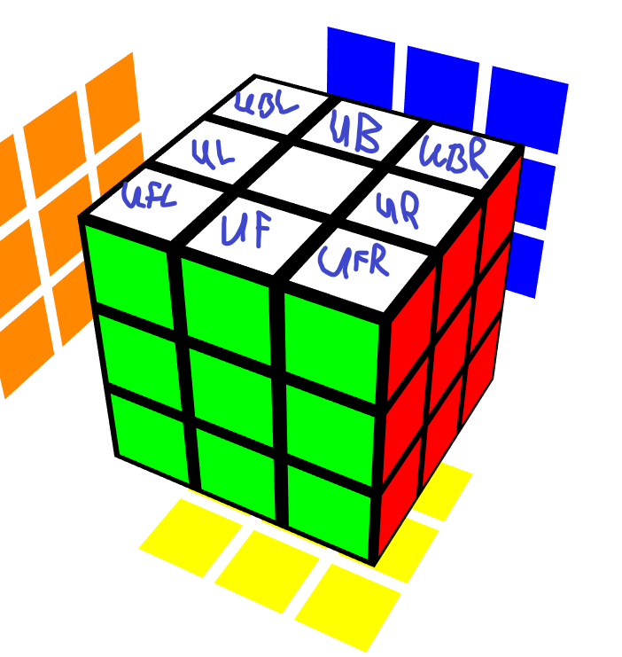
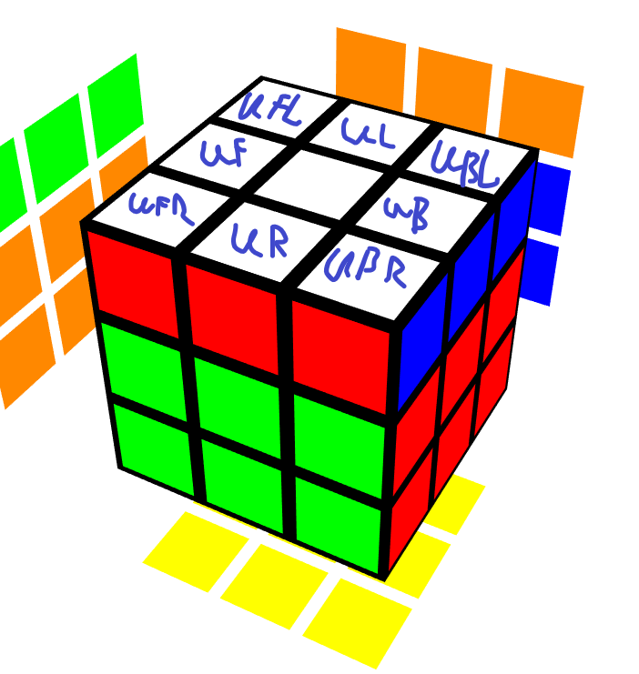

W poprzedniej części strony napisałem, że liczba wszystkich permutacji Kostki Rubika jest 12 razy mniejsza,
niż teoretycznie wynika z obliczeń.
Dzieje się tak ponieważ 1/12
wszystkich stanów kostki jest niemożliwa do ułożenia.
Zacznijmy od oznaczenia stopnia orientacji narożnika. Niech 0 oznacza poprawnie zorientowany narożnik,
1 obrócony zgodnie ze wskazówkami zegara, a 2 przeciwnie do wskazówek zegara.
Załóżmy też, że kostkę trzymamy z białą ściankę u góry i żółtą na dole.
Na ułożonej kostce suma wszystkich liczb oznaczających stopień orientacji będzie równa 0.
Teraz można zauważyć, że ruchy U i D nie zmieniają tej liczby, tak samo ruchy podwójne takie jak R2, L2, F2, B2.
Zostają więc ruchy R, L, F, B
Po wykonaniu ruchu R, stopień orientacji dwóch narożników zmieni się na 2, a pozostałych dwóch, na 1.
Zatem ich suma 2 + 2 + 1 + 1 = 6.
Podobna sytuacja powtórzy się przy ruchach L, F, B oraz ruchach do nich przeciwnych.
Po wykonaniu ruchów R F, suma stopni orientacji będzie wynosić 9, a po ruchach R F R' będzie wynosić 6.
Widać więc, że liczba ta zawsze jest podzielna przez 3. Natomiast jeśli obrócilibyśmy jeden narożnik liczba ta dzieliła by się przez 3 z resztą 2 lub 1 (w zależności, w którą stronę byłby obrócony).
Na początek warto zauważyć, że ruchy U, D, R, L nie zmieniają orientacji krawędzi
(jeśli trzymamy kostkę w jednej pozycji np. biała ścianka u góry, zielona z przodu).
Orientację krawędzi zmieniają ruchy: F, F', B, B'. Wykonując taki ruch zmienia się orientacja 4 krawędzi.
Więc zawsze zmienia się orientacja parzystej liczby krawędzi.
Nie ważne ile ruchów byśmy wykonali zawsze liczba obróconych krawędzi będzie parzysta, zatem nie można obrócić jednej krawędzi.
Zacznijmy od oznaczenia zamiany elementów kostki. Zamianę dwóch elementów A i B na kostce będziemy oznaczać przez (A B), czyli np.
zamianę elementów UF i UL będziemy oznaczać przez (UF UL).
Teraz rozpatrzymy ruch U. Wykonuje on następujące zamiany elementów: najpierw (UF UR), następnie (UF UB) i na koniec (UF UL), podobnie narożniki:
Najpierw zamieni się (UFR UBR), następnie (UFR UBL) i na koniec (UFR UFL)

Zatem każdy ruch na kostce będzie wykonywał 3 zamiany narożników i 3 zamiany krawędzi, więc wykonuje 6 zamian elementów.
Zatem nie ważne ile ruchów byśmy zrobili, liczba zamian dwóch elementów będzie parzysta,
dlatego można zamienić dwa narożniki i dwie krawędzie, ale nie tylko dwie krawędzie lub tylko dwa narożniki.